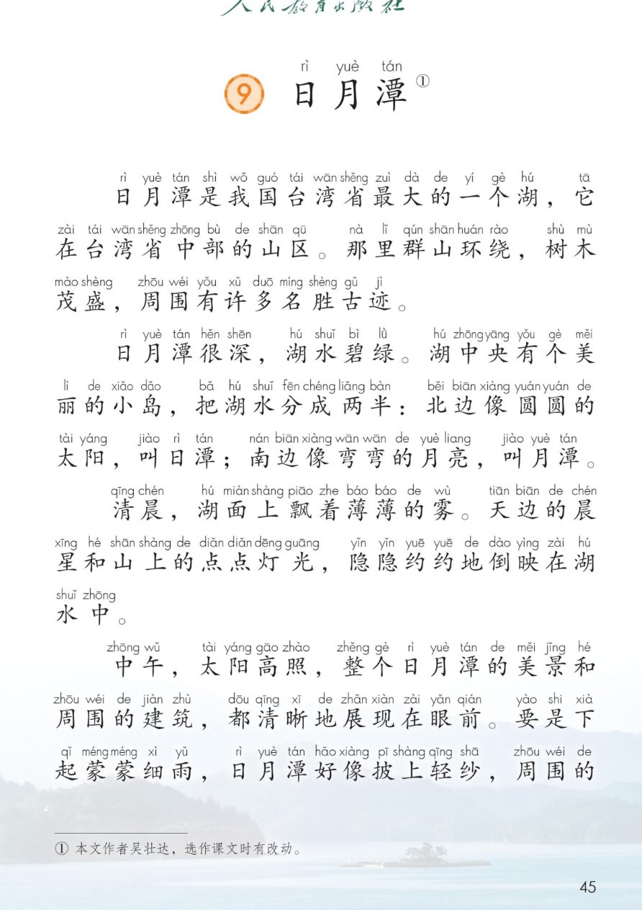
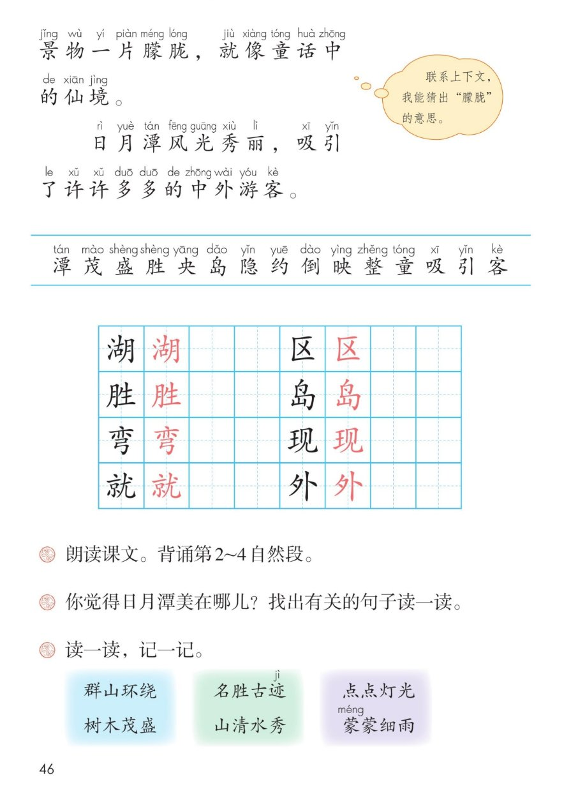

🏞 第 9 课《日月潭》· 有声图文带读
统编版语文 · 第四单元·阅读 · 课本 P45~46
课文 5 个自然段
会认字 15
会写字 8
听写词 10
近义词 4 组
深入理解 8 题
本课本领 按游览顺序介绍
🎧 五步学（可随时点任意一句、一个字、一个词单独听）：
① 听读课文——一句一句读，读到哪一句哪一句发光；开「跟读」后读完一句留时间让你自己读。
② 学字词——15 个会认字、8 个会写字（含书写提示），点一个读一个。
③ 词语·听写·造句——听写 10 个词（读两遍→你写→报答案→听示范句），再听 4 组近义词辨析。
④ 深入理解——8 道题（认知 / 理解 / 运用 / 拓展），开放题答案不唯一，先想后看。
⑤ 介绍美景·分角色——按游览顺序介绍日月潭，再分角色朗读课文。
① 听读课文（点哪一句，读哪一句）点段前的 ①②③ 听整段
注音只标本课要认、要写的字，读音来自课本第 3 页生字表
🎤 朗读要求（老师标准）
① 读准字音，不添字、不漏字、不回读；
② 逗号稍停，句号停得长一点；
③ 冒号后稍停，“北边”“南边”读出对称的感觉；
④ 写美景的句子读得轻、慢：薄薄的雾、隐隐约约、蒙蒙细雨；
⑤ “最大的一个湖”“许许多多”重读，突出特点。
①日月潭是我国台湾省最大的一个湖，它在台湾省中部的山区。那里群山环绕，树木茂盛，周围有许多名胜古迹。
②日月潭很深，湖水碧绿。湖中央有个美丽的小岛，把湖水分成两半：北边像圆圆的太阳，叫日潭；南边像弯弯的月亮，叫月潭。
③清晨，湖面上飘着薄薄的雾。天边的晨星和山上的点点灯光，隐隐约约地倒映在湖水中。
④中午，太阳高照，整个日月潭的美景和周围的建筑，都清晰地展现在眼前。要是下起蒙蒙细雨，日月潭好像披上轻纱，周围的景物一片朦胧，就像童话中的仙境。
⑤日月潭风光秀丽，吸引了许许多多的中外游客。
🤔 想一想（点我可跳过）
课本的样子（点一张图，听读这一页）一张图听一页

第 45 页 · 课文 1~4 段

第 46 页 · 课文结尾 + 生字表 + 课后题
📖 人教版《语文》二年级上册 · 课本第 45~46 页 · 图片仅供个人学习，版权归人民教育出版社所有
② 会认字（15 个）点一个字，听读音、词语和课文里的句子
湖
hú
湖水 · 西湖
12 画 · 左中右（氵）
三部分挨紧，月要宽
区
qū
山区 · 风景区
4 画 · 半包围（匚）
先写里面的叉，框要平直
胜
shèng
名胜 · 胜景
9 画 · 左右（月）
左窄右宽，生字三横不等长
岛
dǎo
小岛 · 海岛
7 画 · 半包围（山）
上宽下扁，山要托住
弯
wān
弯弯 · 弯曲
9 画 · 上下（弓）
上窄下扁，弓要写宽
现
xiàn
展现 · 现在
8 画 · 左右（王）
王旁末笔是提，见字钩舒展
就
jiù
就是 · 就要
12 画 · 左右（尢）
左边京要窄，右边撇舒展
外
wài
中外 · 外面
5 画 · 左右（夕）
夕要写小，卜的竖要直
③ 读一读，记一记（课后题）点一行，听读这一组词语
群群山环绕 树木茂盛
名名胜古迹 山清水秀
点点点灯光 蒙蒙细雨
③ 听写（10 个词）读两遍 → 你在纸上写 → 报答案 → 听示范句
准备听写 · 共 10 个词
○ ○ ○
点下面的「开始听写」，听到一个词就写一个词。
③ 听写的词 · 造句示范点词听读，点句子听示范句，再自己说一句
1群山环绕课后词语
示范句：那里群山环绕，树木茂盛。
✏️ 我也能说：哪里+群山环绕
2树木茂盛课后词语
示范句：那里群山环绕，树木茂盛。
✏️ 我也能说：哪里+树木茂盛
3名胜古迹课后词语
示范句：周围有许多名胜古迹。
✏️ 我也能说：哪里有+名胜古迹
4山清水秀课后词语
示范句：日月潭四周山清水秀，风景很美。
✏️ 我也能说：哪里+山清水秀
5点点灯光课后词语
示范句：山上的点点灯光倒映在湖水中。
✏️ 我也能说：哪里+点点灯光
6蒙蒙细雨课后词语
示范句：要是下起蒙蒙细雨，日月潭好像披上轻纱。
✏️ 我也能说：什么时候+下起蒙蒙细雨
7湖水会写字
示范句：日月潭很深，湖水碧绿。
✏️ 我也能说：什么湖水+怎么样
8小岛会写字
示范句：湖中央有个美丽的小岛。
✏️ 我也能说：哪里+有个+怎样的小岛
9弯弯会写字
示范句：南边像弯弯的月亮，叫月潭。
✏️ 我也能说：弯弯的+什么
10展现会写字
示范句：日月潭的美景都清晰地展现在眼前。
✏️ 我也能说：什么+展现在眼前
③ 近义词辨析（4 组）相同点 / 不一样在哪 / 各造一句
环绕 — 围绕
相同：都表示围在四周。
不一样：环绕多写山、水、树木把一处围在中间；围绕还能用在说话上，说“围绕一个问题讨论”。
环绕：日月潭四周群山环绕。
围绕：同学们围绕这个问题讨论了很久。
茂盛 — 茂密
相同：都表示草木长得多、长得好。
不一样：茂盛写草木长得旺盛；茂密写又多又密，还能写树林、头发。
茂盛：那里树木茂盛。
茂密：这片竹林长得非常茂密。
清晰 — 清楚
相同：都表示看得明白、不模糊。
不一样：清晰多写画面、声音；清楚用得更广，还能说“心里清楚”“说清楚”。
清晰：日月潭的美景清晰地展现在眼前。
清楚：他把事情的经过说得很清楚。
朦胧 — 模糊
相同：都表示看不分明。
不一样：朦胧多写雾、雨、月光，带有美的感觉；模糊只说看不清楚，还常说“记忆模糊”。
朦胧：周围的景物一片朦胧。
模糊：照片拍虚了，人脸很模糊。
③ 词语拓展（说一说，记一记）
课后词语群山环绕 树木茂盛 名胜古迹 山清水秀 点点灯光 蒙蒙细雨
叠词圆圆 弯弯 薄薄 点点 隐隐约约 许许多多
看得清 / 看不清清晰 清楚 / 朦胧 模糊 隐隐约约
时间词清晨 中午
④ 深入理解（8 题 · 先想后看）标「答案不唯一」的题，说得有道理都对
认知日月潭在哪儿？它在台湾省处于什么位置？
看解析
🤔 想一想
解析：
我国台湾省，在台湾省中部的山区。
💡 读第一段先找“在哪里”，这是介绍一个地方的老办法。
认知湖中央的小岛把湖水分成了哪两部分？各叫什么名字？
看解析
🤔 想一想
解析：
北边：叫日潭，因为像圆圆的太阳。
南边：叫月潭，因为像弯弯的月亮。
💡 两个名字都从形状来，一看名字就能想出样子。
理解课文先写清晨，再写中午，这样写有什么好处？
看解析
🤔 想一想
解析：
顺序：清晨 → 中午（下一句加上雨中的样子）。
好处：隐隐约约和清晰一对比，美得更明显。
💡 写一处景物，按时间顺序写，能写出它不同的样子。
理解“朦胧”是什么意思？你是用什么办法猜出来的？
看解析
🤔 想一想
解析：
意思：看得不清楚，模模糊糊。
猜法：前有“蒙蒙细雨”“披上轻纱”，后有“童话中的仙境”。
💡 遇到不认识的词，先看它前面和后面的话，这叫联系上下文。
理解课文说“圆圆的太阳”“弯弯的月亮”，这样写有什么好处？
看解析
🤔 想一想
解析：
好处一：形状看得见——一听就知道一个圆、一个弯。
好处二：叠词好听——圆圆的、弯弯的，读着柔和。
💡 写形状的时候，用叠词加“像什么”，比只说“圆的”“弯的”好得多。
运用你觉得日月潭美在哪儿？找出有关的句子读一读。（课后第 2 题）
看解析
🤔 想一想
解析：
可选句子：湖水碧绿 / 隐隐约约地倒映在湖水中 / 就像童话中的仙境
说法：我觉得美在……，因为……（先引句子，再说原因）
💡 答案不唯一：能找出句子、说清理由，就说明读懂了。
运用用“群山环绕”“树木茂盛”“山清水秀”这几个词，说说你见过的一处景物。
看解析
🤔 想一想
解析：
可选词语：群山环绕 树木茂盛 山清水秀 名胜古迹 点点灯光
说话顺序：先说是哪里 → 再说四周有什么 → 最后用一句话夸一夸
💡 答案不唯一：词语用对了、句子说通顺了就好。
拓展台湾是我国的一部分，日月潭就在那里。学了这篇课文，你想对台湾的小朋友说些什么？
看解析
🤔 想一想
解析：
思路一：夸一夸日月潭，说说自己想去看看。
思路二：发出邀请，请台湾小朋友来自己的家乡玩。
💡 答案不唯一：心里怎么想就怎么说，把话说完整就好。
⑤ 按游览顺序介绍日月潭（先说位置，再说小岛，最后按时间说美景）
💬 介绍支架：先说位置（台湾省中部的山区，群山环绕） → 再说湖和小岛（日潭、月潭） → 接着按时间说清晨 → 然后说中午 → 最后说雨中像仙境，总结一句“风光秀丽”。
⑤ 分角色朗读（老师自选角色，台词全部取自课文原句）点一个角色，听他读的句子
🚩 小导游
开头介绍位置，中间说湖和小岛，结尾总结。
💬 要像小导游一样读得响亮、热情，结尾一句读出自豪。
🌞 日潭
“北边像圆圆的太阳，叫日潭。”
💬 要读出圆、亮的感觉，“圆圆的”读得饱满一点。
🌙 月潭
“南边像弯弯的月亮，叫月潭。”
💬 要读得轻、柔，“弯弯的”读出弧度来。
⭐ 清晨的湖
“湖面上飘着薄薄的雾……隐隐约约地倒映在湖水中。”
💬 要声音放轻，像怕把雾吹散。
☔ 雨中的湖
“要是下起蒙蒙细雨，日月潭好像披上轻纱……”
💬 要前一句读得明亮，后一句读得慢而柔。